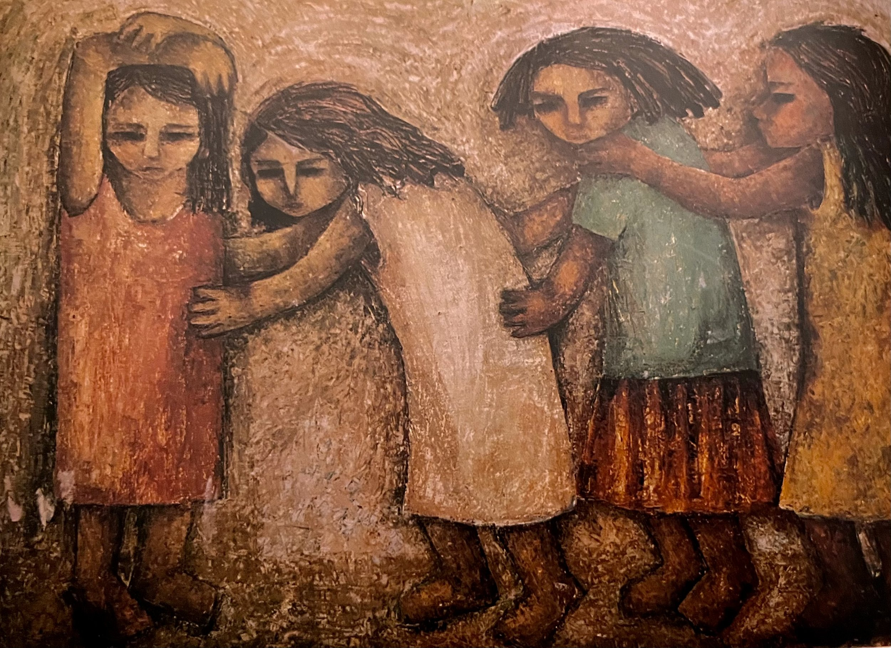

Zeinab al-Seginy, Child's Play, oil on hardboard, undated (from the Ahram Collection)
This text was first published in Mada Masr, 5 February 2024
This series of reflections is an attempt to understand what thinking through failure and despair might mean for a generation that witnessed radical political change, including a revolution and its savage counter-revolutionary backlash, and a world order rapidly running toward its own demise. Thinking through failure can mean refusing existing narratives and norms of what is expected, desired, or valued as right. And it can call upon us to think again about what we really want and what aligns with our reality, whether by rethinking those norms or ideals or by affirming them when the world becomes deeply cynical about them.
It is impossible not to think about failure as both individual and collective at this moment in time, overlapping in ways that are hard to separate or clearly delineate. Failure has become a constant motif in our stories and lives: There is a universal failure to collectively agree on the social and political system we want to share; a failure to leave, to stay, to integrate, to forget, to help. That sense of helplessness was compounded by the recent genocidal attack on Gaza and the Israeli right-wing government's escalating murderous rampage through the strip. It was aggravated by the failure of regional political regimes to adequately respond to the unfolding catastrophe, furthering counterrevolutionary forces that continue to undermine revolutionary hopes and aspirations that have been sweeping the region over the past decade.
This series is an invitation to collectively reflect, even if everything around us forces us not to.
***
Failure is a peculiar thing. It immediately implies a non-conformity, a lack of adherence, an unmet expectation, or a certain deviance from a perceived or even desired norm or ideal. There is something inherently queer about failure, not only in its objective reality — the standard or norm that we failed to meet — but in its existential import.
I have struggled with failure all my life. And that magical word, validation, thrown around so much that it has lost all meaning, was something so far from the kind of upbringing I had. My family didn't really believe in "validation" or the need to constantly hold up a camera and do like Kris Jenner and say, "you're doing great sweetie."
This definitely played a role in bringing a lot of anxiety about how others perceive and choose to deal with me. It is still a struggle, even at the age of 40. It does get better with age, but the need for approval is indeed universal.
As outcasts, we consistently fail to adhere to notions of normalcy and appropriateness—aspirations that to us have been so alienating and hostile. Our failure to live up to the expected life narratives of our peers and societies means that we are constantly forced to question our worth and standing in our respective communities. As failed subjects, we are exposed to all kinds of arbitrary violence while we also bear the brunt of being made an example of our failure. Our lives, experiences and choices become the definitive "specimen" of what to avoid, the standard example of what not to do.
But what should we do? Or, a more apt question: what should we do to succeed?
Failure, then, cannot be understood without its twin opposite, success. Under late capitalism, and as the self becomes the sole arbiter of goodness, success becomes inherently individual. It is each person's individual responsibility to succeed. Not only that, but success has come to mean something very specific, or it has come to be measured according to very specific criteria — the fulfillment of the maximum bourgeois aspirations.
Bourgeois aspirations themselves are generally rooted in the heteronormative imagination of a well-to-do family. While this ideal underwent certain changes over the past century or so due to shifts in social dynamics brought about by mass industrialization, two world wars, and the expansion of education and urbanization to previously marginalized subjects, mainly women and people of color, its essence remains the same. For example, nowadays, instead of a family portrait framed over the fireplace, it's an Instagram post with a conventionally attractive heterosexual couple pictured somewhere scenic, because, of course, the bourgeois fantasies included travel. Leisure is a key measure of success, one can afford to buy time and spend money in a setting that is "photographable", or better, "instagramable."
This measure of success is embedded in a system where a specific form of labor defines the strategic deployment of certain technological tools, whether financial or scientific, to generate undue revenue. In this realm of success, that centers our progressively speculative financial markets, the metrics of labor are often limited to whether this labor will generate financial gains that can be reinvested. Outside of this matrix, other forms of labor, such as intellectual, teaching or social work, are considered "unproductive", or worse, "worthless". That immediately translates as unimportant, unvalued, useless and even a "waste" of time or resources.
Worth is then defined by its image. Under late capitalism, we increasingly move from placing value on the object of consumption, where worth is primarily derived from what you produce and how it can be consumed, to placing value on the appearance of what can be produced. The image, or how the product is perceived, is what determines its worth. This is commodity fetishism that moves beyond the relationship between producers, consumers and products, as Marx theorized. In this context, worth hinges on how we fashion ourselves to create the appearance of a particular value, increasingly reducing it to an aesthetic value, a value that has to be seen and recognized by others, in an ever increasing economy of attention and dissemination.
This value produced by visual representations creates an appearance of worth entirely aestheticized to be a spectacle that can be replicated a million times over, or aestheticized to go viral, as we now call it. This takes Guy Debord's notion of the spectacle a little further. When we idolize this appearance as a desired commodity, we alter possible social relations that are now mediated by its constant reproduction. Those who are producers of such value, so-called "digital creators", manufacture a one-minute reel, of an entire day, premised on a particular aesthetic regime, that all the "others" aspire to. We have reached the ultimate transformation of appearance, that is empty of any moral impetus or virtue. Its worth becomes its potential replicability and aesthetic recognition.
In this context, worth is reduced to external appearance and self-worth (read: success), and the complex relationships we have with others are instrumentalized to instigate this incessant replication of our perceived value or image. The more the image is replicated, the more successful we are. A house, a family, or even a specific profession are of no intrinsic value in themselves until they are perceived and potentially replicated by as many "followers" as possible. The surface trumps the sum of its parts and the "digital creator" can replace any of the parts, practically but also metaphorically, in an instant. Worth here is neither mediated by action nor relationality, but through a carefully curated appearance of the self, an atomized self that is constantly recreated.
Neoliberalism tore through what we understand as the complex relationship between state and subject, the possibility of the social. It reinvented the cult of the individual to a frightening degree and decimated all pretenses that certain things can only be understood, developed and resolved collectively, socially. The social was seen as a remnant of a failed leftist project (this was the end of the Cold War, the end of history as it came to be called), and now we were free individuals, each our own responsibility.
The atomization of the social and the collective in favor of the individual shifted all notions of the political (always mediated by the social, or by a community) as made up of individual choices and decisions. The interest of the individual was to define who we are, what we are and what we can do, a seemingly pervasive but failing liberalism.
Which ultimately meant that any mobilization in the name of the collective was immediately suspect, and must be ruthlessly crushed right away. And this meant that grievances and injustices were only possible or intelligible if communicated as individual misfortunes and hardships that must be individually resolved and addressed. Because, God forbid, we take the responsibility as a collective to support each other and alter oppressive and discriminatory structures.
***
In this realm of individuality, we have come to understand that to love ourselves is the ultimate act of love, and the only way others can love us. This is a sinister solipsistic trick that undermines not just the whole idea of human worth, but also that others are unable to recognise us as humans, unless we engage in a public display of narcissistic indulgence. Self-love was not touted as a way of self-recognition and self-awareness, a process that takes a lifetime, but rather as an immediate acceptance and celebration of individual shortfalls, idiosyncrasies and poor decisions. No longer could we understand that others might love us, for the simple fact that they see us in a way that we can't.
Again, this is the very sense of the social, we can never see who we are (practically speaking, except before a mirror or a lens). And it is precisely because we can't and others can that there exists a possibility of knowing who we are through others. Pop psychology destroys that possibility by turning the gaze of the others (so crucial in making knowing ourselves possible), to our own gaze. We don't need anyone anymore, relationships became a mere extension of this grand scheme of self-love, that only sees itself and can only understand the world from this eschewed, flawed view.
The alleged wisdom behind this new "love yourself" doctrine is the idea that one should not allow others to determine, or undermine, one's self-worth, that one should not invest others with this kind of control, because the consequences could be detrimental. As in when we give people who are cruel or selfish the power to hurt us and distort our sense of self and our world view altogether. There might be a certain degree of truth to that. But, once again, instead of asking us to develop our sense of judgment, sharpen our social instincts and empower us to think and argue about how others treat us and why they deal with us the way they do, pop psychology cuts the social out altogether. We don't need anyone, and the only approval we need is that which we give ourselves, because we are all great. And we are great on our own. And if we fail to love ourselves, then no one can love us.
I have thought a lot about the doctrine of self-love and I always found it deeply flawed and lacking. The craving of others' approval and validation is not going to be magically fulfilled or resolved by telling ourselves that we give ourselves the approval and validation that we need, as if that is somehow going to mysteriously solve the problem. The absence of reassurance mechanisms — for emotional, mental and practical reassurance of merit and worth — must be resolved socially. Cutting others out is sometimes a necessary choice, but cutting the whole world out is hardly the solution.
The much harder conversation we must be having is about the very definition of the human itself. Now more than ever, we are being faced with what that means. If indeed technological advances can reproduce our "replicas" — in sound, speech and even a holographic presence for all eternity — what is it to be human? And what is it to love a human?
For some time, I was taken by St. Augustine's notion of love, humans' desire for immortality constantly pulls them to the source of all immortality, that is God. This pull is true love, Augustine believed. He then went on to explain that the pull we feel toward other humans is only a reflection or a shadow of that divine pull. It's another chase after what is "good", only according to Augustine, it's a misplaced quest, because only God is truly and eternally good.
I am not in fundamental disagreement with Augustine; humans do seek immortality in all kinds of ways, but that restless struggle (illustrated by Augustine's famous confession: Our hearts are restless until they rest in You) can and does get a reprieve in moments of mutual recognition with other fellow humans. I turn to a notion that is slightly more Islamic in its undertones. The serenity and affection one feels for other people can be a remedy to that restless struggle, even if temporarily. There is a pragmatic bent in the Islamic approach to relationships that can teach us a thing or two: not only that human relationships cannot be modeled after a divine model, but that they are, by their very nature, temporary, transactional and endlessly negotiable. God can choose to reveal His divine purpose through a particular experience with other fellow humans, but it is never meant to replace what is solely God's providence.
Theological debates aside, as humans indeed contemplate the possibilities of immortality, Augustine was right in his incisive dissection of that restlessness that is turned inward toward the self and outward toward others. This awareness, uniquely human, can pull in two directions: one is solipsistic, self-centered and self-serving, and the other points out the possibility of the social. That is a starting point — to think about what makes us human, not against it. We can extend past Augustine's argument to hold on to notions of serenity and affection that human relationships can, and do, confer, as a moral guide to what kind of relationships we can envision and imagine.
This idealistic but still pragmatic notion in Islamic thought can engender an ethic of mutuality in the experience of recognition and care that can, and does, alter a lot about what we understand about who and what we are. This is not just in the strict sense of having our worth validated or confirmed. But rather, because humans are intrinsic mimics, we immediately imitate whatever we are exposed to (hence the "viral" success of digital replication). It is an ability that makes our development and growth possible. We mimic, extending the care and recognition we receive, and in doing so, we understand the possibility of love as a potential action of the good, and we understand that we can also ourselves be good by extending care and recognition to others. This involves a certain sensitivity and awareness of others and a certain capacity for action (care is a form of labor), both of which make love possible as a process always embedded in the recognition of the other and what we decide to do with them.
This sensitivity and awareness stand in stark contradiction to self-serving notions of self-worth or success that I tried to examine. We must then think through this "failure", the deviation from this notion of success. Success, in that light, is not just viral replication (as biologically ominous as this sounds) of appearance or self-love as a motor for this production of self-worth. But a certain recognition that a para-theological reading can engender. To be able to create the possibility to re-arrange those desires, those immortal longings, through love. To be loved by others and to love others is to re-institute another meaning of the imperfect human in constant search for completion, not looking for the comfort of being complete on their own, and here, whole notions of glitzy spectacular success can be undone and challenged and new ones can finally emerge.